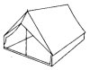

Cos'e' il MOCA
Il MOCA, Metro Olografix CAmp,
e' l'evento che abbiamo voluto organizzare come associazione culturale telematica
"Metro Olografix" per festeggiare i
primi dieci anni della nostra attivita'.
Si, sono ormai passati dieci anni da quando quel gruppo di maledetti hacker
si sedettero al tavolo di un pub pescarese per lanciare una risposta di gruppo
a quella repressione che nel 1994 andava distruggendo la telematica amatoriale,
in un periodo noto a tutti come quello dell'Italian Crackdown.
In
occasione di questo anniversario abbiamo organizzato un hacker camp di stile
nordeuropeo, un posto aperto dove incontrarsi ed incontrare le varie anime della
scena telematica. Ma non solo, questo evento e' anche un ringraziamento per
tutti quelli con cui, in questi dieci anni, abbiamo incrociato il nostro cammino
e di cui sicuramente non avremmo potuto fare a meno. Dieci anni infatti sono
lunghi da passare, soprattutto per un'associazione.
Il
MOCA durera' tre giorni, un intero fine settimana all'insegna del divertimento
e della condivisione dei saperi, naturalmente ad ingresso libero e gratuito.
Smanettamenti, esperimenti, giochi, sport, eventi... questo e molto altro e'
quanto speriamo di poter condividere con tutti voi :)
Abbiamo anche voglia di costruire aree tematiche e zone di sperimentazione all'interno
del camp, ma questo sara' possibile solo grazie al feedback di quelli che intendono
partecipare all'evento.
Vi
aspettiamo numerosi qui a Pescara, con tanta voglia di condividere esperienze
e conoscenze nel puro spirito dell'etica hacker.
Information
wants to be free!
|


{kind=link}